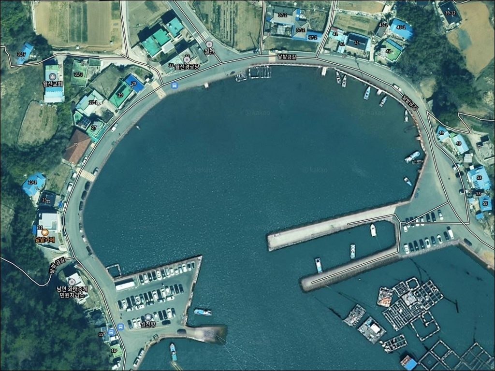
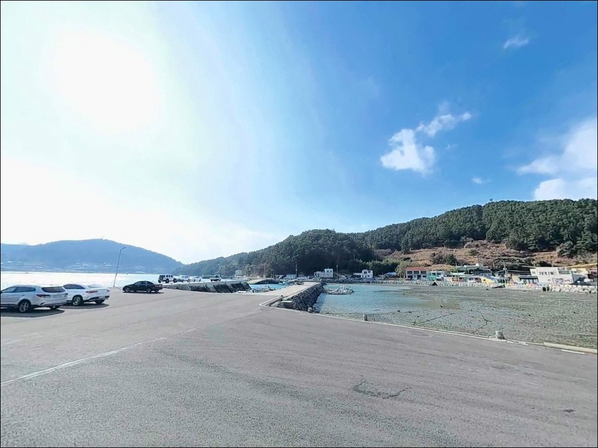
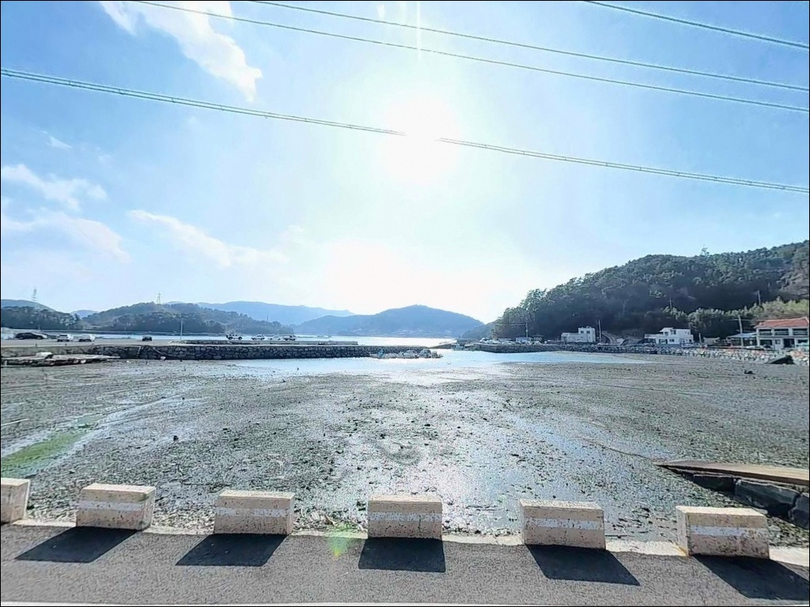
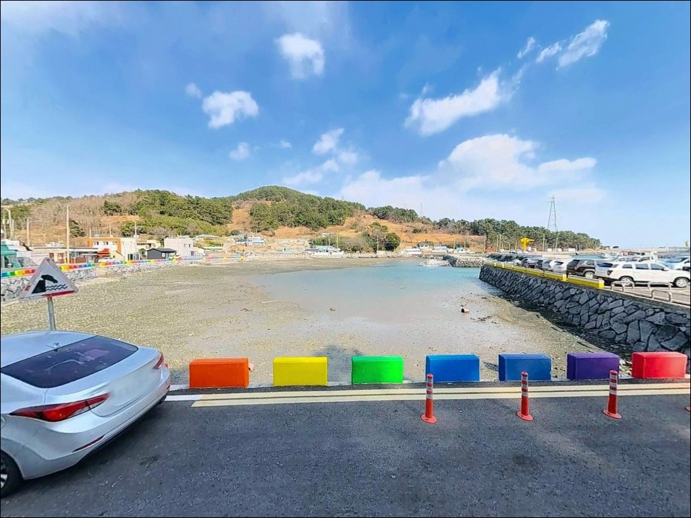
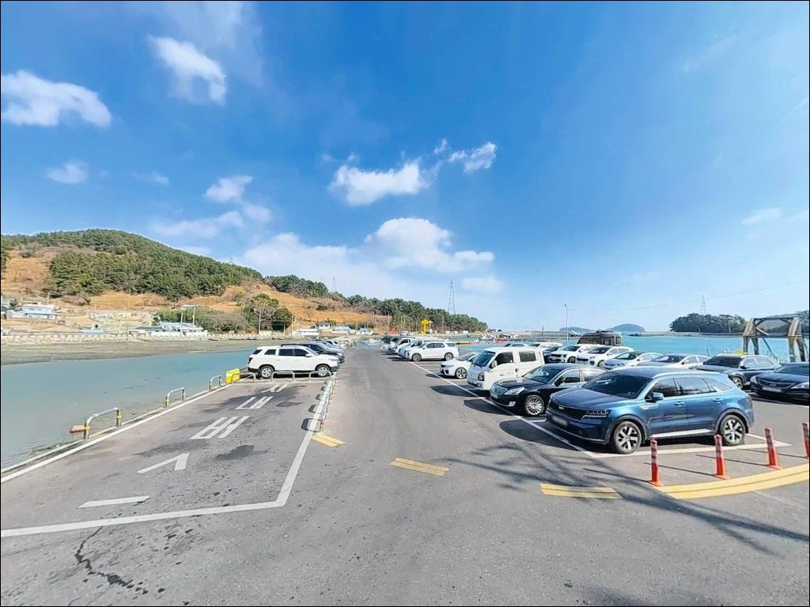
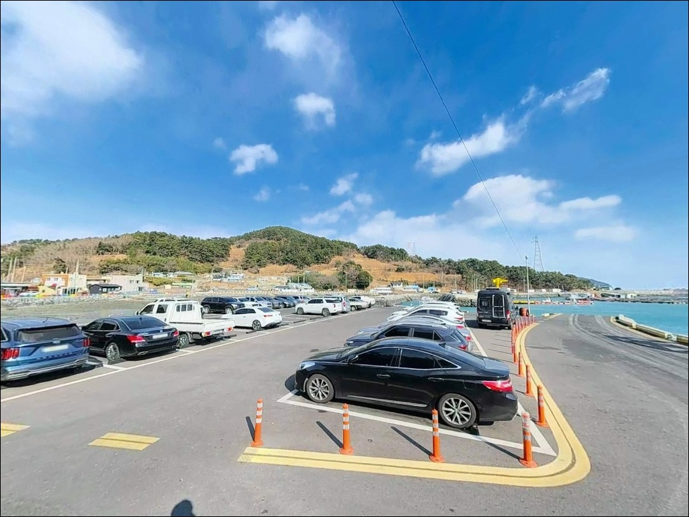
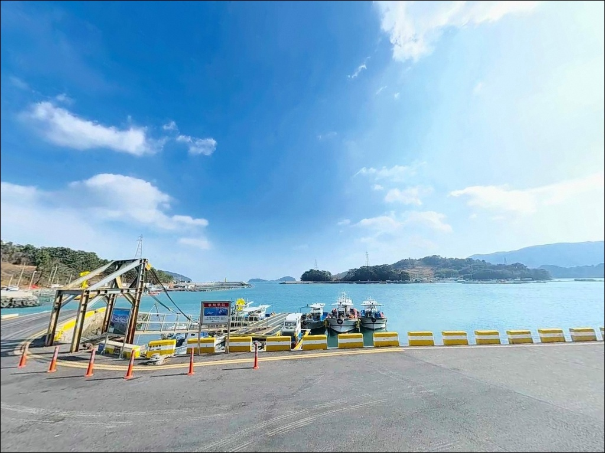
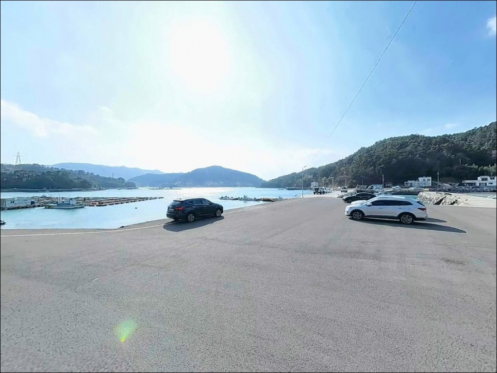

발밑 5m에서 10m로 깊어지는 여수 화태도 월전항 갑오징어 수심 포인트
이 페이지에는 광고(제휴 링크 포함)가 있으며, 광고 링크를 통해 구매하면 운영자가 판매 수익 또는 수수료를 받을 수 있습니다. 포인트 사진: 카카오맵 스카이뷰·로드뷰. 이 페이지의 지도·사진 이미지는 카카오맵의 실제 서비스 이미지와 다를 수 있습니다.


포인트 안내
월전항(월전선착장)
전남 여수시 남면 화태리 44-8
방파제 끝단과 내항 발판을 구분하지 않고 자리를 잡으면
같은 채비로도 반응이 전혀 다른 결과를 맞이합니다.
월전항은 구간마다 수심 구조가 달라
진입 전 자리 위치 선택이 조과를 좌우하는 포인트입니다.
화태대교가 개통된 이후
차량으로 직접 진입할 수 있게 된 화태도는
여수 남면 해역에서 갑오징어·문어 낚시로
꾸준히 찾는 이들이 있는 섬입니다.
월전항은 그 화태도 남동쪽 끝단에 자리 잡은
내만형 소형 어항으로,
주변 소도서군이 외해 파도를 막아주는 구조입니다.
이 글은 월전항의 지형 구조,
진입 동선, 낚시 방식별 공략 조건,
차박 체류 여건에 집중합니다.
조황 단정이나 특정 어종 보장은
이 글의 범위에 포함되지 않습니다.

1. 진입 동선과 포인트 접근성
화태대교는 돌산도와 화태도를 잇는
길이 1,345m의 사장교로,
2015년 개통 이후 화태도 전체의
접근 방식이 바뀐 구조입니다.
다리를 건넌 뒤 화태도 내부 도로를 따라
마을 방향으로 진입하면
월전마을까지 포장도로가 이어집니다.
마을 진입 후 선착장까지는
시멘트 포장 구간이 연결되며
차량 2대 교행이 가능한 폭이 확보된 구간입니다.
급경사나 비포장 구간 없이
일반 승용차 기준으로 진입에 무리가 없습니다.
대형 캠핑카나 장축 차량이라면
좁아지는 마을 구간 회전 반경을
미리 위성지도로 확인해두는 편이 좋습니다.
회차 공간은 방파제 초입 주차 공터에서
확보되는 구조이며,
선착장 인근 평지도 추가 주차 후보로
활용할 수 있습니다.
어선 작업이 이른 아침에 이루어지므로
어업 차량 동선을 막지 않는 자리 선택이
기본 매너입니다.

2. 차박 환경과 야간 체류 여건
월전항은 외해에 직접 노출되지 않는
내만 구조의 항구입니다.
전면 소도서군이 파도와 바람을 차단하는 구조라
야간 체류 환경은 상대적으로 안정적인 편입니다.
차량 통행이 많지 않은 조용한 어촌 분위기가
낚시 후 하룻밤 머무는 환경으로
정온 구간에 해당합니다.
민가와 인접한 구조인 만큼
야간 소음과 조명 사용에는
기본 에티켓을 지켜야 합니다.
항구 특성상 가로등이 일부 배치되어 있으나
불빛 밀도는 높지 않아
개인 헤드랜턴은 필수입니다.
화태도는 다도해해상국립공원 구역에 속합니다.
국립공원 구역 내에서는 지정 장소 외
야영과 취사가 원칙적으로 허용되지 않으므로,
차박 형태로 체류할 계획이라면
출발 전 국립공원공단 남해 사무소에
사전 확인이 반드시 필요합니다.


3. 주변 편의시설 및 인프라 현황
화태도 내에는 대형 편의점이나 마트가 없습니다.
낚시 채비, 식수, 연료, 비상약품은
화태대교를 건너기 전
돌산도 방면에서 완전히 준비해야 합니다.
돌산읍 방면 국도변 편의점과 식당은
화태대교에서 차량으로 10~15분 거리입니다.
월전마을 내에는 어업 종사자 중심의
소규모 생활권이 형성되어 있습니다.
민박을 운영하는 어가도 있어
현지 정보를 직접 확인할 수 있는 환경이지만,
낚시 채비나 식자재 조달은
완전 자급 체제로 진입하는 것이
현실적인 준비 방식입니다.
응급 상황 발생 시
여수 시내까지는 차량 기준
30분 이상 소요됩니다.
출조 전 응급 약품 기본 준비를
갖추고 이동하는 것이 기본입니다.

4. 진입 전 반드시 챙겨야 할 준비사항
월전항 방문 전에 가장 먼저 확인할 것은
물때입니다.
화태도 주변 해역은 창조·낙조류 속도가
2.9~3.0노트 수준에 이르는 구간이 있어
사리 전후에는 채비 컨트롤이
쉽지 않은 조건이 만들어집니다.
조금 전후 또는 정조 타이밍을 기준으로
출발 시각을 결정하는 편이 유리합니다.
기상 변화는 외해 노출이 적은 구조라도
남쪽 방향에서 올라오는 너울의 영향이
발생할 수 있습니다.
출조 전날 기상청 해양 예보를
반드시 확인하고, 당일 아침에 한 번 더
기상 재확인 후 출발하는 것이 기본입니다.
선착장 주변에는 가두리 양식 구조물이
수면에 다수 설치되어 있습니다.
원거리 캐스팅 방향 선택 시
양식 시설 방향을 피하는 것이
기본 매너이며,
여분 채비를 넉넉하게 챙겨두는 것이
현장 운용을 안정적으로 만드는 방법입니다.

5. 월전항의 지형을 알아야 자리가 보입니다
월전항의 핵심 지형은
방파제 끝단의 수심 변화 구간입니다.
발밑에서 5~6m 수심이 유지되고,
전방으로 20m 이상 캐스팅하면
10m에서 최대 20m에 이르는 깊은 수심대로
이어지는 구조입니다.
이 수심 변화 경계선이 조류를 타고
회유성 어종이 붙는 자리입니다.
항 입구는 넓게 열려 있어
조류 흐름이 직접 유입되는 구조입니다.
외항 측면에는 테트라포드가
일부 구간에 배치되어 있고,
내항은 전반적으로 수심이 완만하게 형성됩니다.
선착장 발판은 석축·콘크리트 기반으로
낙상 위험이 낮은 편이며,
방파제 끝단과 외항 직벽 구간이
이 포인트의 핵심 자리입니다.
월전항 전면으로는
월호도, 나발도, 대두라도, 소두라도 등
크고 작은 소도서군이 배치되어 있어
외해 파도와 바람을 차단합니다.
수면이 비교적 조용하게 유지되는 이 구조는
에깅과 루어 채비를 운용하기에
내만형 포인트의 장점을 살릴 수 있는 조건입니다.
최신 조황은 출조 전에 직접 검색해
확인하시기 바랍니다.


6. 지형에 어울리는 낚시 스타일
이 포인트에서 가장 자주 운용되는 낚시는
갑오징어 에깅입니다.
선착장 발판과 방파제 석축 주변은
모래뻘 혼합 바닥 구조로,
에기가 자연스럽게 바닥 근처를
훑을 수 있는 조건을 갖추고 있습니다.
화태도 해역은 갑오징어 에깅으로
꾸준히 찾는 이들이 있는 권역입니다.
문어 워킹도 이 포인트 구조에 맞습니다.
선착장 석축 발판 주변과
양식 구조물 인근 바닥권이
문어가 서식하기에 적합한 지형 조건을 가집니다.
화태도 일대는 문어 낚시로
알려진 해역이며,
워킹 방식으로 석축 근처를 느리게 탐색하는
방식이 기본 공략법입니다.
릴찌낚시는 방파제 끝단 기준으로
1호 구멍찌 채비를 기본으로 운용합니다.
전면 소도서 방향으로 조류가 흐르는
수로 구간이 형성되며,
가을에서 초겨울 사이 내만권
감성돔 이동 경로와 겹치는 구간이 있습니다.
원투낚시는 방파제 끝단이나 물량장에서
깊은 수심대를 향해 멀리 보내는 방식이 유효하며,
볼락 라이트게임은 야간 가로등 아래
석축 경계선 탐색으로 운용합니다.

7. 대안 포인트와 플랜 B 동선
월전항에서 자리 여건이 여의치 않거나
조류가 예상보다 강할 때
첫 번째 대안은 문여방파제입니다.
화태도 내부 도로 기준
약 3~4km 거리에 위치하며,
가로등이 잘 갖춰진 방파제로
야간 볼락 루어와 에깅 모두 운용할 수 있습니다.
감성돔 릴찌낚시, 농어, 갑오징어, 문어까지
다기종 대응이 가능한 화태도의 대표 포인트입니다.
독정항 방파제는 월전항에서
북서쪽으로 약 2km 거리에 위치하며,
화태도의 또 다른 낚시 거점입니다.
조류가 세고 씨알이 굵은 감성돔 기록이
알려진 포인트로,
월전항과 묶어 이동하기 좋은 동선입니다.
돌산도 방면으로 화태대교를 넘어가면
여수 남면 및 화양면 일대에
다수의 방파제 포인트가 분포합니다.
여수 국동항은 갑오징어 워킹 낚시의
도심 접근형 거점으로
접근성이 좋은 대체 선택지입니다.
차박 대체 후보로는
화태도 해안도로 라인 중
조용한 주차 가능 구간을 먼저 검토하는
방식이 현실적입니다.

조용한 내만 구조를 이해하면
월전항이 달라 보입니다
갑오징어 에깅이나 문어 워킹을
선호하는 낚시인이라면
월전항의 내만형 포구 구조는
잘 맞는 환경입니다.
파도와 바람 영향이 적고
발밑부터 수심이 유지되는 이 구조는
에기와 루어 채비를
안정적으로 운용할 수 있는 조건입니다.
반면 화태대교를 건너기 전
채비와 식자재를 완전히 준비하지 않고 오거나,
다도해해상국립공원 야영 기준을
사전에 확인하지 않은 상태로 방문하면
현장에서 당황하는 상황이 생깁니다.
물때 확인, 국립공원 야영 여부, 자급 준비,
이 세 가지를 갖추고 오면
화태도 낚시 여행의 첫 포인트로
기억에 남는 자리가 될 수 있는 곳입니다.
밤낚시 후 조용한 어촌 항구에
차를 세우고 하룻밤 머무는 차박이라면,
국립공원 체류 기준 확인과
이른 아침 어선 이동 동선 배려만 갖추면
낚시와 차박을 자연스럽게 엮기 좋은
화태도 여정이 됩니다.